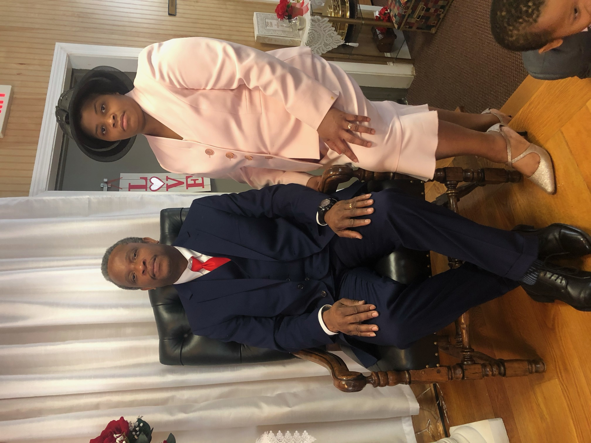
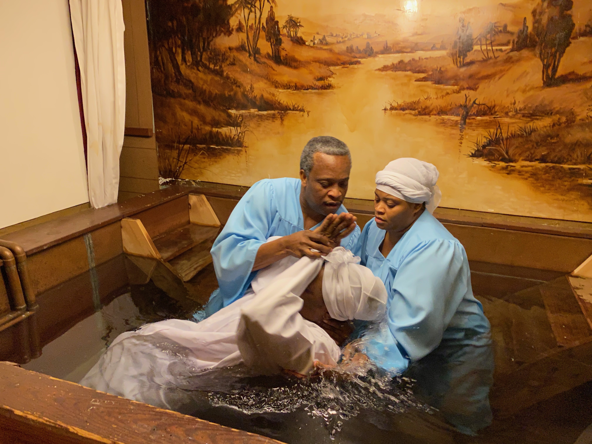

Live inspired. Reach your dreams.
Become all God created you to be.
Sunday Service
Sunday School 9:30am - 10:30am
Worship & Praise 10:40am - 12:30am
Wednesday Bible Study
7pm - 9pm
Friday Worship Service
7pm - 9pm
Pastor John Celestin
God bless you all!! My name is Pastor John Celestin, and I am the pastor and founder of L’église Pentecôte de la Nouvelle Generation. Pentecostal Church if the New Generation. I studied at the Concilio Latino Americano for four years before I became a pastor. My beautiful wife of 19 years ;Jacqueline Celestin,and I have four boys, and two amazing daughters.

L’église Pentecôte de la Nouvelle Generation
Located in Bridgeport Connecticut, L’église Pentecôte de la Nouvelle Generation is a creole/ French speaking, Christian place of worship. The goal of the church is teach God’s word, teach Jesus’ love, help deliver souls to the kingdom of God, and encourage believers to search for his presence
